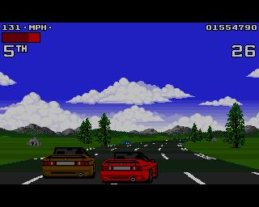

RetroArch on the steamdeck to emulate the Amiga
It's nearing the end of the year. Time to feel nostalgic. I always seem to boot my Amiga around this time. So I thought it would be handy to just run my Amiga games on my Steamdeck attached to the TV.
This is actaully very simple so I thought. SteamOS has flatpak enabled so you can just install RetroArch from flathub. But even better. You can find RetroArch in Steam!
You can find RetroArch in Game mode but I couldn't find it in the Steam store so through a search in the gui revealed I could just install it from a click. Once installed you can run it and it will boot into RetroArch!
The RetroArch install comes bundled with the PUAE core but you will need the original Amiga roms copied to RetroArch to run an Amiga. The RetroArch directories are a bit hidden. On my system they are at:
/home/deck/.local/share/Steam/steamapps/common/RetroArch
I've placed the kick34005.A500 file in the system dir through a secure copy:
scp kick34005.A500 deck@<steamdeck ip>:.local/share/Steam/steamapps/common/RetroArch/system/
I also copied the Lotus 2 ADF file to the deck.
Now in RetroArch select "Content to load" and select the Lotus2 ADF file. It will ask you which core to use and you'll be racing after the disk has loaded!

Launch from steam
I like the Steam GUI in Game Mode. I can easily select and run games. What I would like is to be able to run my Amiga games like that as well. I know there are lots of tools like EmuDeck and sorts but I just want RetroArch to run a game directly. Simple as that so I thought!
If you don't care about some technical background skip this paragraph! As the
Steamdeck is just a Linux box which already has flatpak I know Steam just installs
RetroArch through flatpak. So you can just run RetroArch from the commandline as
follows: flatpak run org.libretro.RetroArch. You can add commandline flags so
it boots a core (machine you emulate) and content (the game) as well. However
I found the RetroArch booted from commandline is different from the one launched
from Steam. From commandline I'm missing lots of stuff. For example the RetroArch
dir is /home/deck/.local/share/Steam/steamapps/common/RetroArch from Steam but
from commandline it is /home/deck/.var/app/org.libretro.RetroArch/config/retroarch/.
I don't want to get too deep in this shit. I just want Steam to do its thing and be
done with it. After some digging I found Valve Developers Wiki
which told me what I want.
Next steps need to be done from 'Desktop Mode':
Steam Menu - Power - Switch to Desktop
I found we can use Steam from the command line to launch any installed asset.
You just need to find the game ID. You can find how steam launched RetroArch
by looking in the ~/.local/share/applications/RetroArch.desktop file. In here
you find that the following command is run steam steam://rungameid/1118310.
From this line we now know the game ID is 1118310.
Valve documentation says we can run Steam with the -applaunch argument which also
accepts extra arguments which will be passed to the launched game.
We can then launch RetroArch with the PUAE core and an Amiga game like this:
steam -applaunch 1118310 -L puae ~/Games/amiga/Lotus2/Lotus\ Turbo\ Challenge\ 2.adf
Ok let's create a script for this. Just create a MyGame.sh file somewhere and add the following content:
#!/bin/sh
steam -applaunch 1118310 -L puae ~/Games/amiga/Lotus2/Lotus\ Turbo\ Challenge\ 2.adf
Adapt to your situation of course then make the file executable (chmod +x)
Now open the filebrowser on the Steamdeck and right select the file you just created. The context menu provides an option "Add to Steam". Switch back to Game Mode (icon on the Desktop) and find it in the library among the Non-Steam games!
Voila!
The only consequence I found was that when the game exits you are presented with the RetroArch entry in steam instead of the Game you lauched. I can live with that.
Custom Art Work
The default look of the Non-Steam game is ugly to say the least. You can only change that in Desktop Mode. In Steam go to the game and right click on the banner (The place where you'd expect some imagery). The context menu provides an option to set the background and logo.
To change the icon in library/collection lists you need to go to the library. Right-click the entry and select Manage - Set Custom Artwork.
Next up: make it look like a CRT!